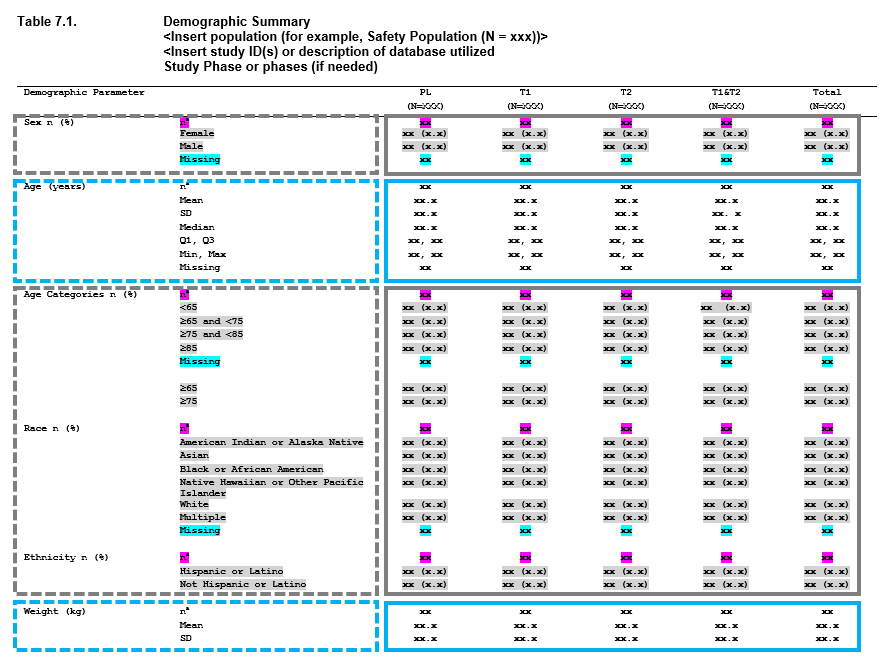

Welcome to Tplyr! Tplyr is a traceability minded grammar of data format and summary. It’s designed to simplify the creation of common clinical summaries and help you focus on how you present your data rather than redundant summaries being performed. Furthermore, for every result Tplyr produces, it also produces the metadata necessary to give your traceability from source to summary.
As always, we welcome your feedback. If you spot a bug, would like to see a new feature, or if any documentation is unclear - submit an issue through GitHub right here.
Take a look at the cheatsheet!
Installation
You can install Tplyr with:
# Install from CRAN:
install.packages("Tplyr")
# Or install the development version:
devtools::install_github("https://github.com/atorus-research/Tplyr.git", ref="devel")What is Tplyr?
dplyr from tidyverse is a grammar of data manipulation. So what does that allow you to do? It gives you, as a data analyst, the capability to easily and intuitively approach the problem of manipulating your data into an analysis ready form. dplyr conceptually breaks things down into verbs that allow you to focus on what you want to do more than how you have to do it.
Tplyr is designed around a similar concept, but its focus is on building summary tables common within the clinical world. In the pharmaceutical industry, a great deal of the data presented in the outputs we create are very similar. For the most part, most of these tables can be broken down into a few categories:
- Counting for event based variables or categories
- Shifting, which is just counting a change in state with a ‘from’ and a ‘to’
- Generating descriptive statistics around some continuous variable.
For many of the tables that go into a clinical submission, the tables are made up of a combination of these approaches. Consider a demographics table - and let’s use an example from the PHUSE project Standard Analyses & Code Sharing - Analyses & Displays Associated with Demographics, Disposition, and Medications in Phase 2-4 Clinical Trials and Integrated Summary Documents.

When you look at this table, you can begin breaking this output down into smaller, redundant, components. These components can be viewed as ‘layers’, and the table as a whole is constructed by stacking the layers. The boxes in the image above represent how you can begin to conceptualize this.
- First we have Sex, which is made up of n (%) counts.
- Next we have Age as a continuous variable, where we have a number of descriptive statistics, including n, mean, standard deviation, median, quartile 1, quartile 3, min, max, and missing values.
- After that we have age, but broken into categories - so this is once again n (%) values.
- Race - more counting,
- Ethnicity - more counting
- Weight - and we’re back to descriptive statistics.
So we have one table, with 6 summaries (7 including the next page, not shown) - but only 2 different approaches to summaries being performed. In the same way that dplyr is a grammar of data manipulation, Tplyr aims to be a grammar of data summary. The goal of Tplyr is to allow you to program a summary table like you see it on the page, by breaking a larger problem into smaller ‘layers’, and combining them together like you see on the page.
Enough talking - let’s see some code. In these examples, we will be using data from the PHUSE Test Data Factory based on the original pilot project submission package. Note: You can see our replication of the CDISC pilot using the PHUSE Test Data Factory data here.
tplyr_table(adsl, TRT01P, where = SAFFL == "Y") %>%
add_layer(
group_desc(AGE, by = "Age (years)")
) %>%
add_layer(
group_count(AGEGR1, by = "Age Categories n (%)")
) %>%
build() %>%
kable()| row_label1 | row_label2 | var1_Placebo | var1_Xanomeline High Dose | var1_Xanomeline Low Dose | ord_layer_index | ord_layer_1 | ord_layer_2 |
|---|---|---|---|---|---|---|---|
| Age (years) | n | 86 | 84 | 84 | 1 | 1 | 1 |
| Age (years) | Mean (SD) | 75.2 ( 8.59) | 74.4 ( 7.89) | 75.7 ( 8.29) | 1 | 1 | 2 |
| Age (years) | Median | 76.0 | 76.0 | 77.5 | 1 | 1 | 3 |
| Age (years) | Q1, Q3 | 69.2, 81.8 | 70.8, 80.0 | 71.0, 82.0 | 1 | 1 | 4 |
| Age (years) | Min, Max | 52, 89 | 56, 88 | 51, 88 | 1 | 1 | 5 |
| Age (years) | Missing | 0 | 0 | 0 | 1 | 1 | 6 |
| Age Categories n (%) | <65 | 14 ( 16.3%) | 11 ( 13.1%) | 8 ( 9.5%) | 2 | 1 | 1 |
| Age Categories n (%) | >80 | 30 ( 34.9%) | 18 ( 21.4%) | 29 ( 34.5%) | 2 | 1 | 2 |
| Age Categories n (%) | 65-80 | 42 ( 48.8%) | 55 ( 65.5%) | 47 ( 56.0%) | 2 | 1 | 3 |
Tplyr is Qualified
We understand how important documentation and testing is within the pharmaceutical world. This is why outside of unit testing Tplyr includes an entire user-acceptance testing document, where requirements were established, test-cases were written, and tests were independently programmed and executed. We do this in the hope that you can leverage our work within a qualified programming environment, and that we save you a substantial amount of trouble in getting it there.
You can find the qualification document within this repository right here. The ‘uat’ folder additionally contains all of the raw files, programmatic tests, specifications, and test cases necessary to create this report.
The TL;DR
Here are some of the high level benefits of using Tplyr:
- Easy construction of table data using an intuitive syntax
- Smart string formatting for your numbers that’s easily specified by the user
- A great deal of flexibility in what is performed and how it’s presented, without specifying hundreds of parameters
Where to go from here?
There’s quite a bit more to learn! And we’ve prepared a number of other vignettes to help you get what you need out of Tplyr.
- The best place to start is with our Getting Started vignette at
vignette("Tplyr") - Learn more about table level settings in
vignette("table") - Learn more about descriptive statistics layers in
vignette("desc") - Learn more about count layers in
vignette("count") - Learn more about shift layers in
vignette("shift") - Learn more about percentages in
vignette("denom") - Learn more about calculating risk differences in
vignette("riskdiff") - Learn more about sorting Tplyr tables in
vignette("sort") - Learn more about using Tplyr options in
vignette("options") - And finally, learn more about producing and outputting styled tables using Tplyr in
vignette("styled-table")
In the Tplyr version 1.0.0, we’ve packed a number of new features in. For deeper dives on the largest new additions:
- Learn about Tplyr’s traceability metadata in
vignette("metadata")and about how it can be extended invignette("custom-metadata") - Learn about layer templates in
vignette("layer_templates")
References
In building Tplyr, we needed some additional resources in addition to our personal experience to help guide design. PHUSE has done some great work to create guidance for standard outputs with collaboration between multiple pharmaceutical companies and the FDA. You can find some of the resource that we referenced below.
Analysis and Displays Associated with Adverse Events
Analyses and Displays Associated with Demographics, Disposition, and Medications
Analyses and Displays Associated with Measures of Central Tendency